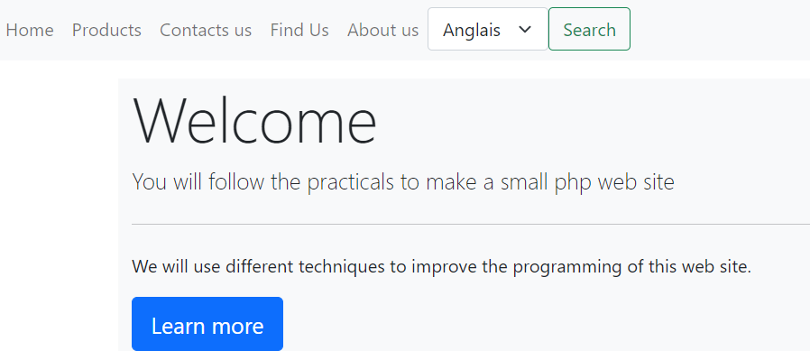

Attention
Ne remplissez pas le rapport sur votre navigateur , vous ne pourrez pas le sauvegarder.
Téléchargez le sur votre disque dur !
Prérequis
Avant de commencer
Attention
Vérifiez bien que vous êtes en UTF8.
Exercice 1 - La reformulation et la modification des pages existantes
L'ensemble de tous les fichiers se découpent selon cette organisation, nous utiliserons les préfixes suivants, pour réorganiser notre code :
- m_ pour modèle (les données),
- v_ pour vue (les interfaces),
- c_ pour contrôleur (l'affichage des interfaces et l'appel des données).
Comme notre fichier TPModel.php contient des données, c'est un modèle, nous le nommerons m_model.php.
Nous allons toutefois changer les valeurs du tableau associatif, car le routage sera un petit peu différent.
<?php
//Déclaration de variables
$lang = array();
$menu01 = ['accueil' => 'accueil',
'nos produits' => 'produits',
'nous contacter' => 'contact',
'plan d\'accès' => 'acces',
'qui sommes nous ?' => 'nous',
'langage' => 'Français'];
$menu02 = ['home', 'products', 'contacts us', 'find Us', 'about us', 'language'];
$form01 = 'Valider';
$form02 = 'Sign in';
$lang = $menu01;
Comme le fichier TPEntete.php contient l'en-tête HTML, qui sert à l'affichage, nous le nommerons v_entete.php :
<!doctype html>
<head lang="fr">
<head>
<!-- Required meta tags -->
<meta charset="utf-8"/>
<meta name="viewport" content="width=device-width, initial-scale=1">
<!-- Bootstrap CSS -->
<link href="https://cdn.jsdelivr.net/npm/bootstrap@5.0.0-beta2/dist/css/bootstrap.min.css" rel="stylesheet"
integrity="sha384-BmbxuPwQa2lc/FVzBcNJ7UAyJxM6wuqIj61tLrc4wSX0szH/Ev+nYRRuWlolflfl"
crossorigin="anonymous">
<title><?= basename(__File__) ?></title>
</head>
<body>
la situation est la même pour TPNav.php. Nous le nommerons v_nav.php.
Notez que la structure des liens a changé, l'URL s'écrit maintenant comme expliquée dans cette
partie.
<nav class="navbar navbar-expand-lg navbar-light bg-light">
<ul class="navbar-nav">
<?php foreach ($lang as $cle => $valeur): ?>
<li class="nav-item">
<a class="nav-link" href="index.php?uc=controleur&action=<?=$valeur;?>"><?php echo ucfirst($cle);?></a>
</li>
<?php endforeach;//fin de la boucle ?>
</ul>
</nav>
<nav class="bd-subnavbar py-2" aria-label="Secondary navigation"></nav>
Enfin, pour TPPied.php, nous le nommerons v_pied.php
<!-- Option 1: Bootstrap Bundle with Popper -->
<script src="https://cdn.jsdelivr.net/npm/bootstrap@5.0.0-beta2/dist/js/bootstrap.bundle.min.js" integrity="sha384-b5kHyXgcpbZJO/tY9Ul7kGkf1S0CWuKcCD38l8YkeH8z8QjE0GmW1gYU5S9FOnJ0" crossorigin="anonymous"></script>
</body>
</html>
Il existe encore deux vues :
TPAccueil.php devient v_accueil.php, vous noterez néanmoins la disparition des
include
<div class="container">
<div class="bg-light row align-items-center">
<div class="col">
<h1 class="display-4">Ceci est la page d'accueil!</h1>
<p class="lead">Vous allez suivre les TP pour faire un petit site php</p>
<hr class="my-4">
<p>Nous allons utiliser différentes techniques pour améliorer la programmation de ce site.</p>
<a class="btn btn-primary btn-lg" href="#" role="button">Learn more</a>
</div>
</div>
</div>
TPConstruction.php va devenir, v_construction.php. vous noterez aussi la disparition des
include
<div class="container">
<div class="bg-light row align-items-center">
<div class="col">
<h1 class="display-4">Page en construction!</h1>
</div>
</div>
</div>
Résultat
Pour l'instant il n'est pas possible d'obtenir un résultat global, car aucun fichiers n'est lié entre eux.
Exercice 2 - Les liaisons entre les pages
A - Création de la page index.php
Le serveur que vous utilisez, apache ou nginx, est paramétré pour lire d'abord les fichiers index avec les extensions soit html, soit php.
Voila pourquoi notre fichier s'appelle index.php car ce sera le premier fichier lu automatiquement par le serveur.
Voici le code lié à ce fichier :
<?php
include('m_model.php');
include('v_entete.php');
// Gestion de la langue
$lang = $menu01;
include('v_nav.php');
//Gestion de la route
if(!isset($_REQUEST['uc']))
$uc = 'accueil';
else
$uc = $_REQUEST['uc'];
switch($uc)
{
case 'accueil':
{
include('v_accueil.php');break;}
default :
{
include('c_controleur.php');break;}
}
include('v_Pied.php') ;
Ce fichier va lire l'URL du site. Nous allons donner un format particulier à cette url comme cela
est expliqué dans cette partie.
Au lancement de la page, il n'y a aucune variable uc ou action dans l'URL.
la variable globale REQUEST est vide. Le système affecte à uc la valeur accueil et va ouvrir
la page v_accueil.php
Résultat
Lorsque vous lancez le site pour la première fois, vous obtenez la page suivante :

En vous aidant de la documentation php répondez aux questions suivantes :
- Quels sont les fichiers qui sont lancés au moment de l'appel d'index.php ?
- Que signifie l'instruction
include ?
- Par quoi peut elle être aussi remplacée ?
B - Modification de la page v_construction.php
Vous allez modifier la page v_construction.php afin de l'adapter à tous les messages d'erreur que le site pourra rencontrer.
Vous allez remplacer le texte par une variable message qui sera instanciée par le contrôleur.
Vous obtenez :
<div class="container">
<div class="bg-light row align-items-center">
<div class="col">
<h1 class="display-4"><?= $message;?></h1>
</div>
</div>
</div>
C - Création de la page c_controleur.php
Cette page va faire la liaison entre les pages et les données. Lorsque vous cliquez sur un lien
vous voyez apparaitre une valeur pour les deux variables uc et action.
Comme nous n'avons qu'un contrôleur, la valeur de uc sera toujours la même. La valeur de action affectera
l'ouverture de la page dans le contrôleur. Voici son code :
<?php
$action = $_REQUEST['action'];
switch($action)
{
case 'accueil':
{
include('v_accueil.php');
break;
}
case 'produits' :
{
$message='Page en construction';
include('v_construction.php');
break;
}
case 'contact' :
{
include('v_form.php');
break;
}
case 'acces' :
{
$message='Page en construction';
include('v_construction.php');
break;
}
case 'nous' :
{
$message='Page en construction';
include('v_construction.php');
break;
}
case 'reponse' :
{
include('v_reponse.php');
break;
}
default :
{
$message='Erreur 404 !';
include('v_construction.php');
break;
}
}
Cette application ne fait appel au donnée que dans l'index.
Résultat
Lorsque vous lancez l'application vous devriez avoir les mêmes résultats que précédemment.
En vous aidant de la documentation php répondez aux questions suivantes :
- Crées ou renommer les pages correspondant à
v_form, v_reponse.
- Testez ces pages en cliquant sur "Nous contacter" puis "Valider".
Exercice 3 - Traduire le site en anglais
A l'aide de ce que nous avons fait dans le TP02, nous allons établir une version anglaise de ce site.
Il faut tout d'abord modifier le fichier v_nav.php pour mettre le formulaire de choix.
<nav class="navbar navbar-expand-lg navbar-light bg-light">
<ul class="navbar-nav">
<?php foreach (array_slice($lang,0,count($lang)-1) as $cle => $valeur): ?>
<li class="nav-item">
<a class="nav-link" href="index.php?uc=controleur&action=<?=$valeur;?>"><?php echo ucfirst($cle);?></a>
</li>
<?php endforeach;//fin de la boucle ?>
</ul>
<form class="d-flex" method="post" action="index.php?uc=controleur&action=accueil">
<select class="form-select" aria-label="Default select example" name="langue">
<option selected><?= $lang['langage'];?></option>
<option value="1">Français</option>
<option value="2">Anglais</option>
</select>
<button class="btn btn-outline-success" type="submit">Search</button>
</form>
</nav>
<nav class="bd-subnavbar py-2" aria-label="Secondary navigation"></nav>
Vous remarquerez que l'action du formulaire a changée. L'url pointe sur l'action 'accueil' du contrôleur.
Mais pour connaitre le tableau à modifier il faut connaitre la réponse du formulaire. Elle se fera dans le fichier
index. Modifiez l'index de la façon suivante :
<?php
include('m_model.php');
include('v_entete.php');
//Gestion de la langue
if (!isset($_REQUEST['langue'])) {
$lang = array_slice($menu01,0,count($menu01)-1);
$selected = $menu01['langage'];
} else
{
if ($_REQUEST['langue'] === "1") {
$lang = array_slice($menu01,0,count($menu01)-1);
$selected = 'Français';
} else {
$lang = array_slice($menu02,0,count($menu02)-1);
$selected = 'Anglais';
}} ;
include('v_nav.php');
//Gestion de la route
if(!isset($_REQUEST['uc']))
$uc = 'accueil';
else
$uc = $_REQUEST['uc'];
switch($uc)
{
case 'accueil':
{
include('v_accueil.php');break;}
default :
{
include('c_controleur.php');break;}
}
include('v_Pied.php') ;
Vous avez rajouté ici, la gestion de la langue. Mais pour que cela fonctionne, il faut que la page d'accueil soit en anglais.
Vous allez créer une page v_welcome.php dans laquelle vous mettrez le code suivant :
<div class="container">
<div class="bg-light row align-items-center">
<div class="col">
<h1 class="display-4">Welcome</h1>
<p class="lead">You will follow the practicals to make a small php web site</p>
<hr class="my-4">
<p>We will use different techniques to improve the programming of this web site.</p>
<a class="btn btn-primary btn-lg" href="#" role="button">Learn more</a>
</div>
</div>
</div>
Il faut enfin dire au contrôleur de faire le changement de page en fonction de la langue.
case 'accueil':
{
if($selected=='Anglais')
{
// Affichage de la page anglaise si Anglais est choisi
include('v_welcome.php');
}
else{
// Affichage de la page française dans tous les autres cas
include('v_accueil.php');
}
break;
}
Résultat
Lorsque vous choisissez la langue anglaise, vous obtenez la page suivante :

En vous aidant de la documentation php répondez aux questions suivantes :
- Que fait la fonction
array_slice dans la page v_nave ?
- Pourquoi avez vous
count($lang)-1 en troisième paramètre dans la fonction ?
- Quel est le chemin obtenus si vous cliquez sur
Products,
- Pourquoi le menu en français apparait après avoir cliqué sur
Products,
- Modifier les pages pour les avoir en anglais.
- Modifiez le contrôleur pour qu'il choisisse les bonnes pages.
- Cas particulier pour le formulaire :
Pour le formulaire:
a - Modifiez les variables form01 et form02, sous forme de tableau associatif, de façon à vous conformer au tableau suivant :
| Indice |
Français |
Anglais |
| nom |
Nom |
Name |
| prenom |
Prénom |
Forename |
| email |
email |
email |
| adresse |
Adresse |
Address |
| accueil |
plan d’accès |
find Us |
| cp |
Code Postal |
Zip |
| ville |
Ville |
City |
| valide |
Valider |
Sign in |
b - Modifiez le formulaire, puis le contrôleur pour qu'ils prennent en compte le changement de langue.
c - Rajoutez echo $selected; dans le case contact du contrôleur.
Lancez l'application en passant en Anglais, puis en cliquant sur "Contact us". Que constatez vous ?